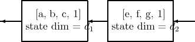

Theorem([BGKvD]) A minimal factorization

of a system [A,B,C, 1] corresponds to projections P1 and P2 satisfying P1 + P2 = 1,
|
| (14.1) |
provided the state dimension of the [A,B,C, 1] system is d1 + d2. (which has the geometrical interpretation that A and A - BC have complimentary invariant subspaces).
We begin by giving the algebraic statement of the problem. Suppose that these factors exist. By the Youla-Tissi statespace isomorphism theorem, there is map
|
| (14.2) |
which intertwines the original and the product system. Also minimality of the factoring is equivalent to the existence of a two sided inverse (n1T ,n 2T )T to (m 1,m2). These requirements combine to imply that each of the following expressions is zero.